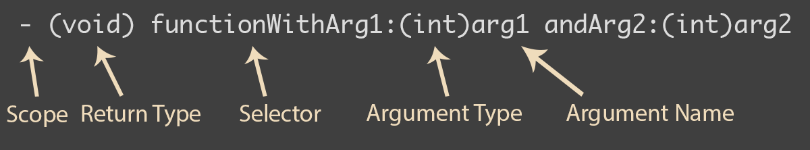
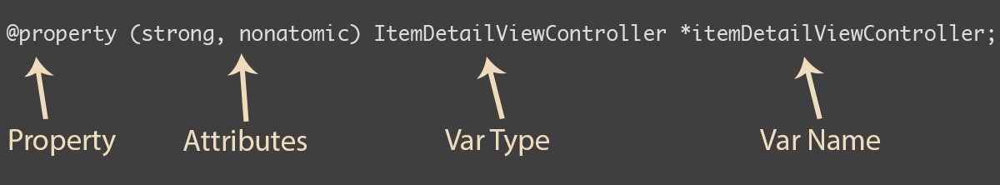
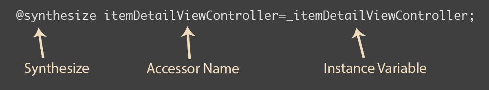

Where is this declared/defined?
Declare them in the header(.h) files

@interface myObject: NSObject {
int myInt;
}
- (id) init;
- (void) functionWithArg1:(int)arg1
andArg2:(int)arg2;
@end
#import "myObject.h"
@implementation myObject
- (id) init {
[super init]
return self;
}
- (void) functionWithArg1:(int)arg1
andArg2:(int)arg2 {
NSLog(@"%i",arg1+arg2);
}
@end
2 parts of creating an object
myObject *object = [[myObject alloc] init];It's complicated.
Pretty much it means that variable is an object
myObject *object = [[myObject alloc] init];
[object functionWithArg1:2 andArg2:3];
Automatic Reference Counting.
A.K.A: You don't have to care anymore
As long as something points to object X, X will exist.
Setters/getters are annoying and repetitive to write
Does the implementation for you

tableView:cellForRowAtIndexPath
numberOfSectionsInTableView:
tableView:numberOfRowsInSection:
tableView:canEditRowAtIndexPath:
tableView:canMoveRowAtIndexPath:
1 row, 1 section, no moving, editing possible
They allow you to pass a function as an argument